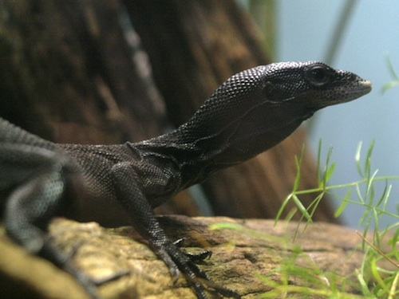
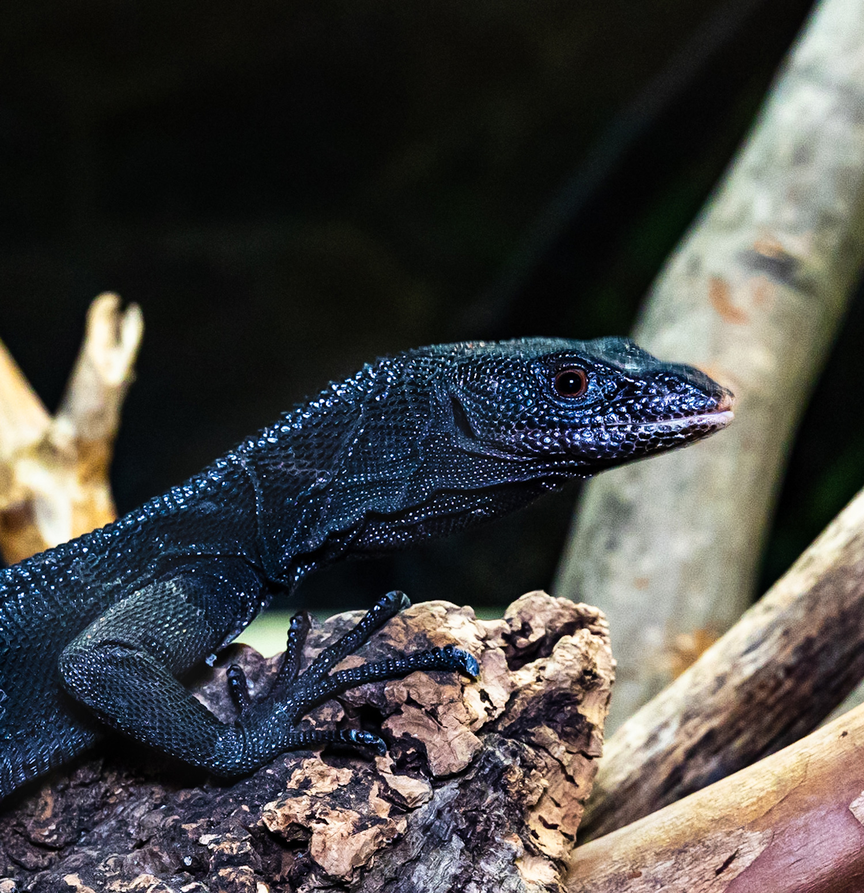
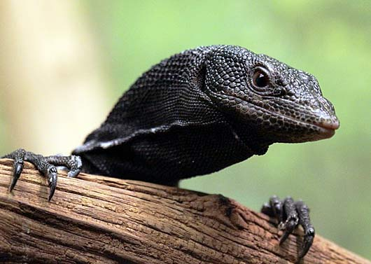
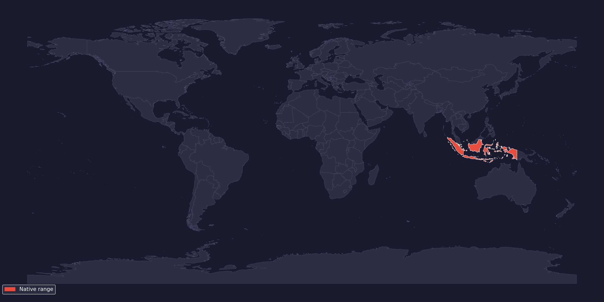

Description
The Black Tree Monitors are covered in shiny black scales. Their long tails account for around 2/3 of the Monitor's body length. They have sharp claws that allow them to climb trees with ease and have forked tongue.
Conservation
TThe Black Tree Monitor is listed as not evaluated by the IUCN red list but they are listed under Appendix II of the Convention on International Trade in Endangered Species of Wild Fauna and Flora.

Reproduction
The females lay around 3-7 eggs at a time, sometimes twice a year. They are layed in nests that can be located up off the ground in hollows such as termite mounds, tree holes, or decaying logs. The mother will protect her children until they become independent.

Habitat
Forests and mangrove swamps in eastern Indonesia

Other Names: Monitor beccarii, Black tree goanna, Beccari's monitor Average Size: 3-4 feet long Lifespan: Up to 15 years
Diet: small invertebrates, small mammals, amphibians, and baby birds or eggs. Sexual Maturity: 2-3 years